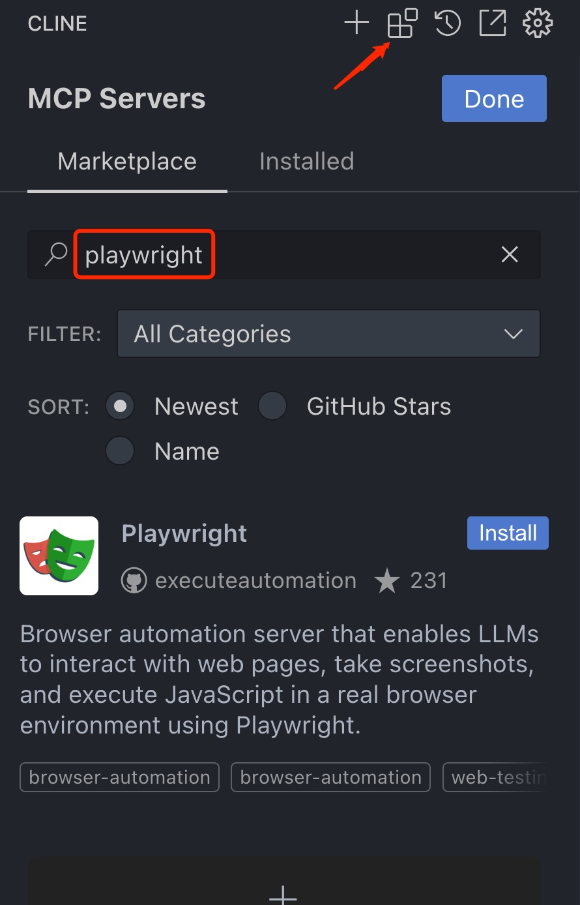
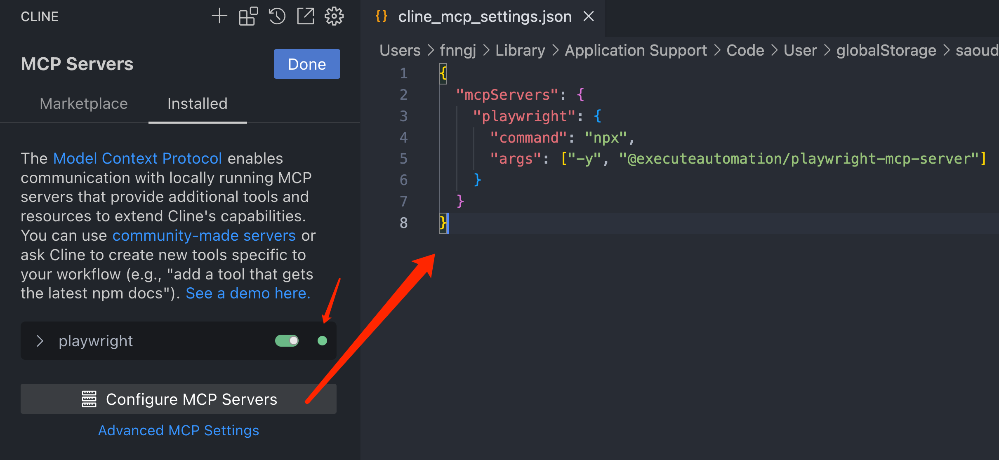
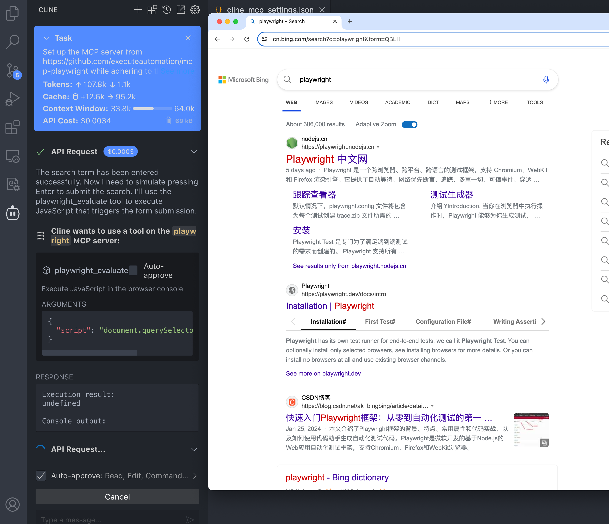
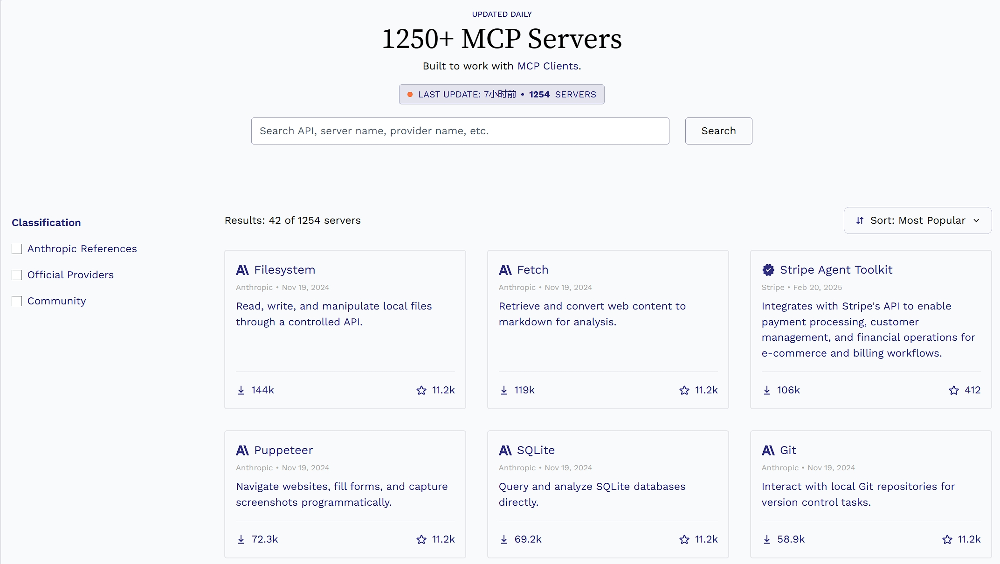

MCP入门
Table of Contents
什么是MCP
MCP 概念
MCP（ Model Context Protocol ， 模型上下文协议 ）是由 Anthropic 提出并于 2024 年 11 月开源的一种通信协议，旨在解决大型语言模型（LLM）与外部数据源及工具之间无缝集成的需求
它通过标准化 AI 系统与数据源的交互方式，帮助模型获取更丰富的上下文信息，从而生成更准确、更相关的响应
主要功能
- 上下文共享：应用程序可以通过 MCP 向模型提供所需的 上下文信息 （如文件内容、数据库记录等）， 增强 模型的 理解能力
- 工具暴露：MCP 允许应用程序将 功能 （如文件读写、API 调用）暴露给模型，模型可以 调用 这些 工具 完成复杂任务
- 可组合的工作流：开发者可以利用 MCP 集成 多个服务和组件，构建灵活、可扩展的 AI 工作流
- 安全性：通过本地服务器运行，MCP 避免将敏感数据上传至第三方平台，确保数据隐私
MCP架构
MCP 采用客户端-服务器架构：
- MCP 客户端（Client）：通常是 AI 应用程序（如 Claude Desktop 或其他 LLM 工具），负责发起请求并与服务器通信
- MCP 服务器（Server）：轻量级程序，负责暴露特定的数据源或工具功能，并通过标准化协议与客户端交互
通信格式：基于 JSON-RPC 2.0 ，支持请求、响应和通知三种消息类型，确保通信的标准化和一致性
MCP Servers主要功能
MCP Servers 作为一个轻量级的本地服务，旨在为客户端提供 数据访问 和 功能执行 的接口：
资源暴露（Resource Exposure）: 资源是服务器提供给客户端的数据实体，可以是文件、数据库记录、内存中的对象等
例如： 文件资源：file:///home/user/report.txt 内存资源：memo://recent-insights工具提供（Tool Provisioning）: 工具是服务器暴露的 可执行功能 ，客户端可以通过调用这些工具完成特定任务
例如： 查询数据库：query_database（参数：SQL 语句，返回：查询结果） 文件写入：write_file（参数：文件路径、内容）- 动态通知（Dynamic Notification）: 当资源发生变化时，服务器可以通过 通知机制 （如 notification 消息）主动 推送 更新 到客户端
- 会话管理（Session Management）: 处理客户端的 连接初始化 、 能力协商 和 会话关闭
自定义 MCP Servers
本地实现一个文件资源服务，创建 mcp_server.py 文件:
import json import sys # 处理客户端请求 def handle_request(request): method = request.get("method") params = request.get("params", {}) request_id = request.get("id") if method == "initialize": return { "jsonrpc": "2.0", "result": {"version": "1.0", "capabilities": ["resources", "tools"]}, "id": request_id } elif method == "read_resource": uri = params.get("uri") with open(uri.replace("file:///", ""), "r") as f: content = f.read() return {"jsonrpc": "2.0", "result": content, "id": request_id} elif method == "call_tool": tool_name = params.get("name") if tool_name == "echo": return {"jsonrpc": "2.0", "result": params.get("message"), "id": request_id} else: return {"jsonrpc": "2.0", "error": {"code": -32601, "message": "Method not found"}, "id": request_id} # 主循环：通过 Stdio 通信 def main(): while True: # 从 stdin 读取请求 raw_input = sys.stdin.readline().strip() if not raw_input: break request = json.loads(raw_input) # 处理请求并返回响应 response = handle_request(request) sys.stdout.write(json.dumps(response) + "\n") sys.stdout.flush() if __name__ == "__main__": main()
在相同的目录下创建 test.txt 文件
Hello, this is a test file!
启动一个终端调用：
$ echo '{"jsonrpc": "2.0", "method": "read_resource", "params": {"uri": "file:////path/to/test.txt"}, "id": 2}' | python mcp_server.py {"jsonrpc": "2.0", "result": "Hello, this is a test file!", "id": 2}
这里看到服务返回了文件的内容
使用现有 MCP Servers
- GitHub：在 GitHub 上查找 MCP servers：
- 网站：通过下面的网站查找 MCP servers：
- UI自动化相关的 MCP servers
以 Playwright 项目为例子，在项目里添加 playwright-mcp-server：
git clone https://github.com/AutoTestClass/playwright-mind cd playwright-mind npm install -g @executeautomation/playwright-mcp-server # <--添加--
MCP Client
MCP client 一般选用 AI 应用程序（如 Claude Desktop、cline 或其他 LLM 工具），负责发起请求并与服务器通信。这里选用 VSCode + cline 的组合：
在 VSCode 中打开 cline 插件，在 MCP servers 中搜索 playwright 插件安装：

配置 playwright mcp servers 的启动配置

{ "mcpServers": { "playwright": { "command": "npx", "args": ["-y", "@executeautomation/playwright-mcp-server"] } } }通过 LLM 大模型，描述需求（UI 自动化相关操作），LLM 大模型会通过 playwright MCP servers 启动浏览器完成一些 UI 自动化操作

MCP Servers的作用
最后，再来总结 MCP Servers 的作用。下面是网上找的一张图

MCP Servers 真正的价值不在于传统的 UI 自动化测试，因为它是通过文字描述操作浏览器去完成一些工作。并没有自动化的脚本沉淀
当然，如果把 Prompt 沉淀下来当作自动化脚本也是可以的，这确实颠覆了写自动化脚本的形式
当然，MCP Servers 更多的价值是 利用 LLM 操作本地资源
例如，本地文件，数据库、git 等 想想 不需要写复杂的 SQL 语句，通过自然语言描述就可以轻松完成本地数据库的操作
这种效率的提升是非常明显
